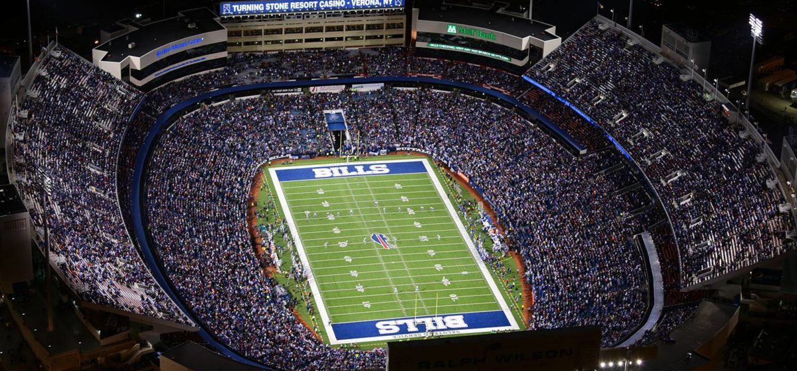
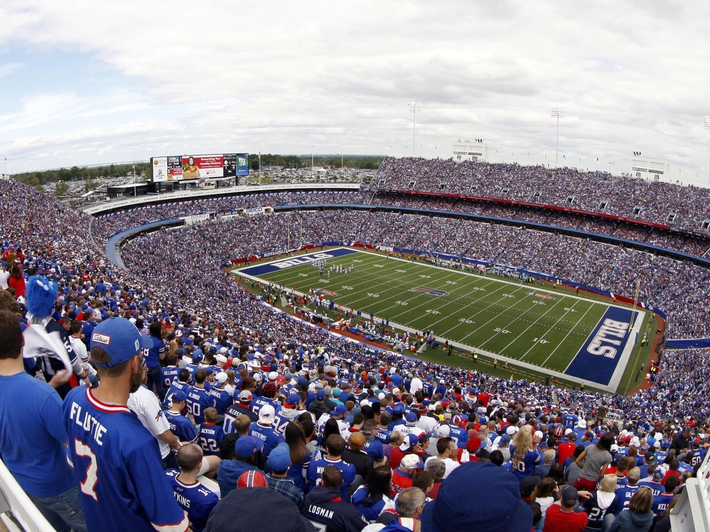

Buffalo Bills 
Történet:
A klubot 1959. október 28-án alapították, de Buffalónak már korábban, az NFL első éveiben is volt csapata, amely All Americans, majd Bisons (ezt Billsre változtatták) és Rangers néven szerepelt. A klubalapítási kérelmet Ralp Wilson nyújtotta be az Amerika Futball Liga (AFL) megalapításakor, de az először kiszemelt Miami negatív válasza után Buffalóban jött létre a csapat. Első szezonjuk 1960-ban volt az AFL északi csoportjában, de 1963-ig nem értek el számottevő eredményt. Lou Saban vezetőedző megerősítette a védelmet, és az 1963-as szezonban már a második helyen végeztek a csoportjukban, de az AFL playoff mérkőzésén 26–8-ra kikaptak a New England Patriotstól. 1964-ben továbbléptek, 12–2-es mutatóval megnyerték csoportjukat, majd a bajnoki döntőben – otthon játszva – 20–7-re verték a San Diego Chargerst. A Buffalo Bills az AFL bajnoka lett. A következő évben (1965) 10–3–1-gyel ismét a bajnokságért játszhattak, és ismét bajnokok lettek: megint a San Diegót verték meg, ezúttal 23–0-ra. A csapat egyik legeredményesebb játékosa volt ekkor a magyar származású Peter Gogolak, aki mezőnygóljaival járult hozzá a sikerhez. Az 1966-os szezon előtt a csapatot elhagyta a sikeredző Saban, Joe Collier lépett a helyére. Ezt a váltást elég gyenge szezonok követték, így leváltották a vezető edzőt, de még mindig nem találtak senkit ako olyan öszhangot teremtett volna mint a csapat megalapulásakor Lou Saban.
Eredmények:
Kétszer nyert AFL bajnokságot de még egszer sem sikerült super bowl kupát szereznie a csapatnak, pedig a 15., 16., 17. és a 18. super bowl rájátszásba is bejutottak. Tízszer volt a legeredményesebb az AFC East csoprtban és négyszer az egész AFC csoportban is.
Stadion:
1960 és 1972 között a War Memorial Stadium-ban, majd 1973-tól a mai napig a Ralph Wilson Stadiumban küzdenek ellenfeleik ellen.
Ralph Wilson Stadium:
Kicsivel több mint 65ezer ember befogadására képes, de a legtöbb látogatója több mit 80ezer ember volt 2013-ban. Az építési költésge több mint 115 millió dollár volt.
 